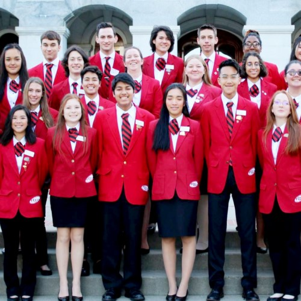

Patrick Kibilov
I am a second year undergraduate student at University of California Riverside studying Marketing and Marketing Research. I plan to continue my studies as a postgraduate student in Marketing Research and Analytics. As an undergraduate student I have yet to gain experience in regards to working with business corporations or even separate marketing firms, but I have extensive experience in beginner and intermediate experience level jobs in the hospitality, retail and medical fields. My ultimate career goal is to work in an integrated marketing branch of a humanitarian betterment company. Whether it be a grass roots company founded on ethical diplomacy or a technology corporation founded on the basis of pushing the boundaries of contemporary tech. I want to be a part of a greater organization that will have a lasting effect on the world and I want to be the one to spread the word about the revolutionary product or service.
In the hospitality field I have a cumulative six years of recreational kitchen experience, from school as well as occupation, and four years professional experience working in kitchens and bars as a server, a barista, a kitchen hand and a line cook. In retail I have dipped my toes in online sales working for a contracting company and reselling stripped building parts to turn a recycled profit where my job status was as a Sales Manager. I recently picked up a job in working as an assistant in file organization for a psychologists office for doctors that work at Stanford Medical. I also have experience from interning at grass roots organizations as a part of my college level internship program where I was involved in the launch of a mobile phone application with the premise of legitimizing organized gatherings for ethical, political and moral events.
One of my personal skills involve a cumulative thirteen plus years in musical education where I practiced electric guitar and bass guitar techniques as well as participating in multiple organized bands within my musical education, within my high school education as a Jazz Band bassist, and in my personal life in a band my friends and I organized where I am the chief composer in the songs we do covers off of. I have lots of leadership experience through my high school club experience as a local school Vice-President of the Career Technical Student Organization (CTSO) known as Family, Career and Community Leaders of America (FCCLA), as well as a Regional President's position for the same organziation where my jursidiction encompassed all of the Bay Area based schools that also had the FCCLA CTSO integrated into their school system. Currently in college I serve as the Secretary of the UCR Ski and Snowboard Club. I have been very actively skiing with my family for years and now that I am a part of UCR Ski and Snowboard Club my opportunities to network (while having fun) is hugely broadened. I was recently put into the position of UCR Ski and Snowboard Club Secretary, as of October 2020.
Experience
Hospitality Service
• Line Cook
• Server
• Misc. Staff Hand and Kitchen aid
Office Assistance and Scanning
• Psychologist's Off-site Office
• Documentation of Patient files from the past 10 years
• Recorded datatbase for Psychoanalysis
Education
Ardian C. Wilcox High School
UC Riverside
Portfolio
